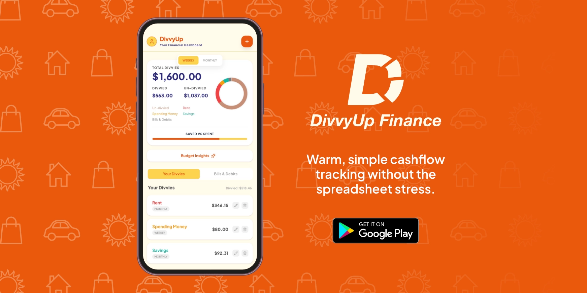
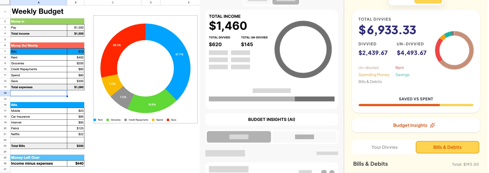
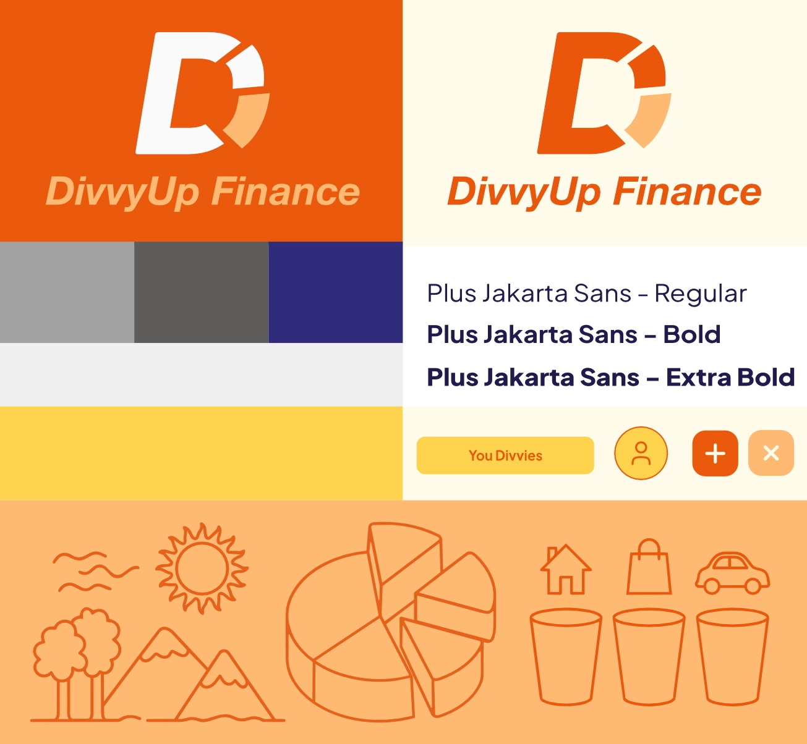
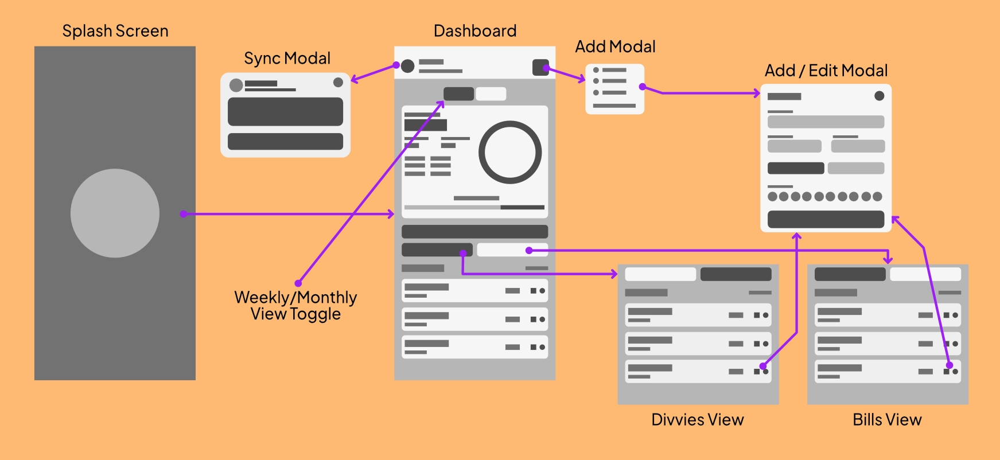
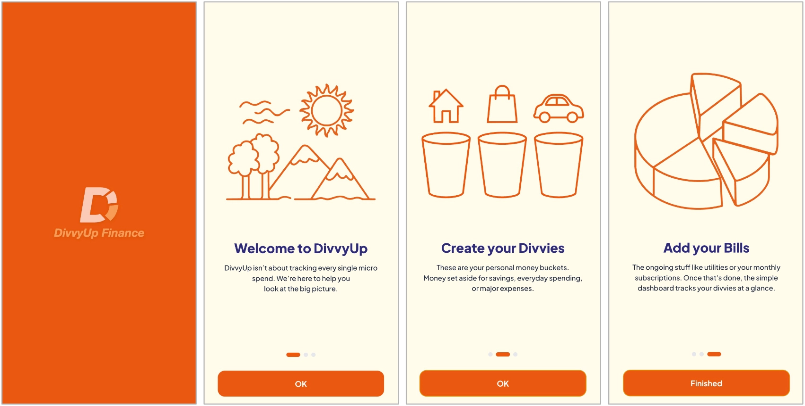
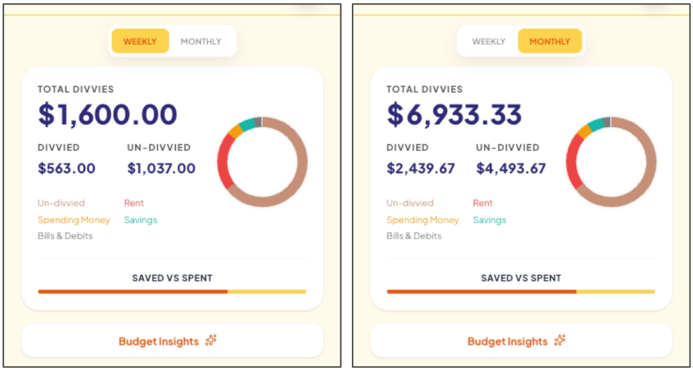
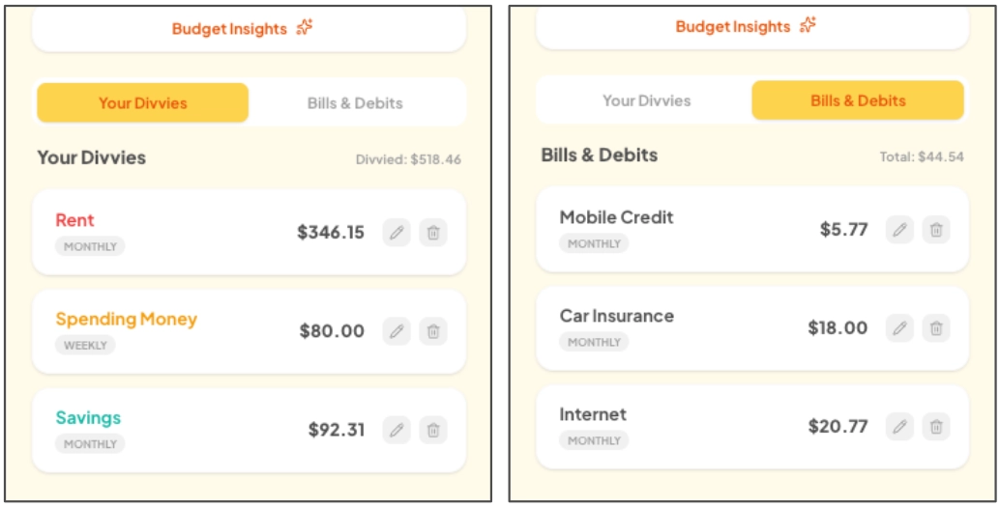
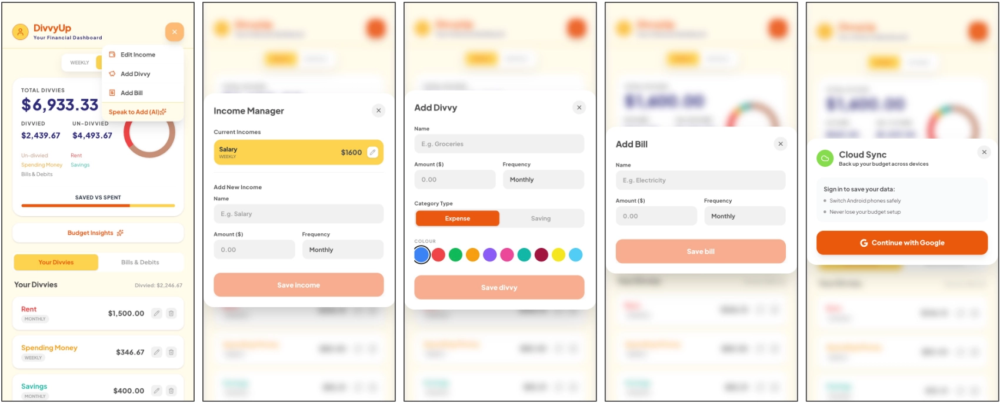

DivvyUp Finance
Lead UI/UX Designer & Front-End Prototyper
The Problem
Most personal finance tools induce anxiety. Unlike DivvyUp, other budgeting apps rely on cold, clinical spreadsheets and require exhausting micro transaction logging,
leading to user drop off and decision fatigue.
The Solution
DivvyUp replaces data clutter with a friendly, cozy, and approachable ecosystem. Designed as a simple "set and forget" tool, it focuses purely on macro tracking divvying
cashflow into visual buckets. This drastically reduces cognitive load and makes financial tracking accessible and stress free.

Defining the Problem: Escaping the Spreadsheet
Through early exploration, I found that traditional budgeting tools overwhelm users with dense numbers. DivvyUp originated from a highly functional Excel spreadsheet used to manage macro cashflow. I abstracted those raw data blocks into clean Figma wireframes, proving that personal finance can be both mathematically sound and visually inviting.

Cozy Design System & Tokens
Utilizing a decade of branding expertise, I built a visual identity centered around a ring chart logo mark. Energetic primary orange (#EA580C) and soft cream
(#FFFBEB) were mapped directly into CSS theme tokens to create a friendly, cozy, and approachable atmosphere that contrasts sharply with standard banking apps.
To guarantee legibility on small mobile screens and ensure WCAG compliance, I established a strict typographic hierarchy using Plus Jakarta Sans, paired with generous touch targets
(border-radius: 12px) and custom, friendly vector line art.

Simplified Application Architecture
To eliminate friction, I tried to make every step as minimal as possible. The UX flow isolates core actions into dedicated, single purpose modals. This linear progression from onboarding, straight to the easy, simplified dashboard, prevents the user from feeling lost in complex navigation trees.

Frictionless Onboarding
The onboarding sequence deliberately sets an encouraging tone. Soft illustration vectors introduce the concept of "Divvies" (custom buckets) and fixed bills, priming users for stress free cashflow management before they ever see a number.

Flexible Macro Toggles
The easy, simplified dashboard acts as the heart of the app, providing instant visual feedback through a dynamic ring chart without overwhelming the user with raw data.
A prominent Weekly / Monthly view toggle recalculates totals in real time, allowing users to shift their financial perspective and inspect immediate cashflow at a single tap.

Reducing Decision Fatigue
Rather than mixing recurring fixed expenses with flexible savings buckets, the main feed uses a segmented tab system.
Dividing Your Divvies (flexible spending) from Bills & Debits (fixed utilities) provides a clear mental separation, drastically reducing cognitive load.

Interaction Design for Speed
From accessible color pickers in the 'Add Divvy' modal to seamless cloud backup integration, every interaction is designed to minimize input time. Form inputs validate instantly, keeping the UI responsive, clear, and easy to navigate on mobile viewports.

Bridging Design & Development
To ensure the final product matched the high fidelity prototypes flawlessly, I utilized Google Gemini AI to accelerate the front end scaffolding and React state management.
By acting as the bridge between visual design and technical execution, I fine tuned custom Tailwind CSS tokens and translated the design system directly into a production ready codebase. This guarantees the application meets strict performance standards and is fully prepared for an upcoming Google Play deployment under my future independent studio label.
/* Custom Tailwind Tokens & Theme Configuration */
@import "tailwindcss";
@theme {
--font-sans: "Plus Jakarta Sans", sans-serif;
/* Cozy Brand Colours */
--color-primary: #EA580C;
--color-background-soft: #FFFBEB;
--color-secondary-navy: #2F2B7A;
/* Dynamic Preset System */
--color-preset-1: #3B82F6;
--color-preset-2: #EF4444;
--color-preset-3: #10B959;
}